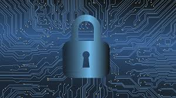

Adapting to Emerging Technologies and Dynamic Threats Within Cybersecurity
What is Cybersecurity Video
Emerging Technologies and Dynamic Threats
In the rapidly evolving landscape of cybersecurity, staying ahead requires a deep understanding of both emerging technologies and the ever-shifting nature of dynamic threats. Emerging technologies are innovative solutions that are on the brink of changing how we approach security challenges. Emerging technology can range from artificial intelligence also known as AI or machine learning. On the other side of the spectrum there are dynamic threats that exploit vulnerabilities across the digital world. These threats are like chameleons, continuously evolving their techniques to bypass tradition security measures.
Current Landscape of Cybersecurity
The current state of the cybersecurity field is marked by both remarkable advancements as well as escalating challenges. As technology continues to become more advanced, the threat landscape has similarly evolved, becoming more sophisticated. Businesses in all sectors are battling a wide range of cybersecurity issues, from data breaches to nation-state hacking operations. Within the recent years cybersecurity professionals have witnessed an alarming increase in cyber-attacks and breaches. The shifting landscape within the cybersecurity field demands collaborative efforts to increase defenses and ensure the security of digital assets.

Role of Emerging Technologies
Emerging technologies play a complex and revolutionary role within the cybersecurity field. Innovations such as AI and machine learning have created a new era of possibilities and challenges. AI and machine learning has the potential to empower security systems by sifting threw immense amounts of data that the human eye might miss. However, while this new technology offers great potential, they can also pose potential threats. One example of this is AI can be manipulated by hackers to generate convincing phishing attacks. This is why understanding the interplay between these emerging technologies as both safeguards and potential vulnerabilities is key for creating a balance between innovation and security within the field.
Importance of User Awareness
Within this digital age, where cyber threats are such a robust problem, the importance of user awareness and training cannot be overlooked. There was a joint study by Stanford University Professor Jeff Hancock and security firm Tessian that found a whopping eighty-eight percent of data breaches are caused by user error. This is why it is crucial to empower individuals with the knowledge and skills to recognize and respond to potential security threats. By understanding the potential risks, users can become the first line of defense against cyber-attacks. Regular training sessions not only keep individual users informed about evolving threats but also create a culture aware of cyber-attacks within and organizations.
About The Author
Brandon Leeney is currently a sophomore at Lewis University majoring in cybersecurity. Brandon did five years in the United States Navy aboard CVN74 the USS John C Stennis. He one day hopes to work in the Pentagon as an IT Cybersecurity Specialist.